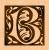
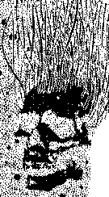

|
 ook of Summonning
 
There are times, places and rules to respect. The patient and clever Reader will learn of Ye Times and Ye Seasons to be Observed and to Raise up Ye Stones before starting to practice. Keep in mind They can rarely be banished easily. Their wills are strange and strange is Their logic. With care and devotion, the Reader may use ye Adjuration of Great Cthulhu or learn to Summon Shub-Niggurath Ye Black To be thaught about strange times or travel without moving, the Reader may want to Call Forth Yog-Sothoth. There is a different Ritual for summoning Yog-Sothoth and opening the Gate for troubled times. Other Higher Beings may teach the Reader about past or future events. This is the procedure for the invocation of He Who Lies Beyond the Veil and Who Shall Tear It Asunder at the time of the Great Dying. The Render may impart the the happenings of the past and future with greater accuracy than even that Cathay volume of good repute. |
 e adventurous
Reader has to remember always Who he will expose himself to when trying to
summon One of Them. For it is a highly hazardeous thing to trouble the
Dream of The Old Ones.
e adventurous
Reader has to remember always Who he will expose himself to when trying to
summon One of Them. For it is a highly hazardeous thing to trouble the
Dream of The Old Ones.
 Table of contents Table of contents
|
Book
of Materials  |